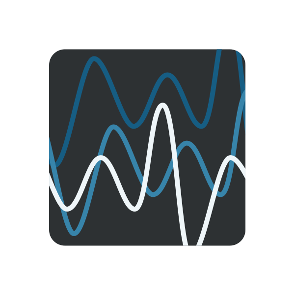
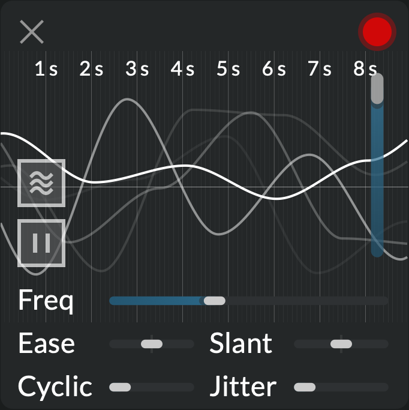
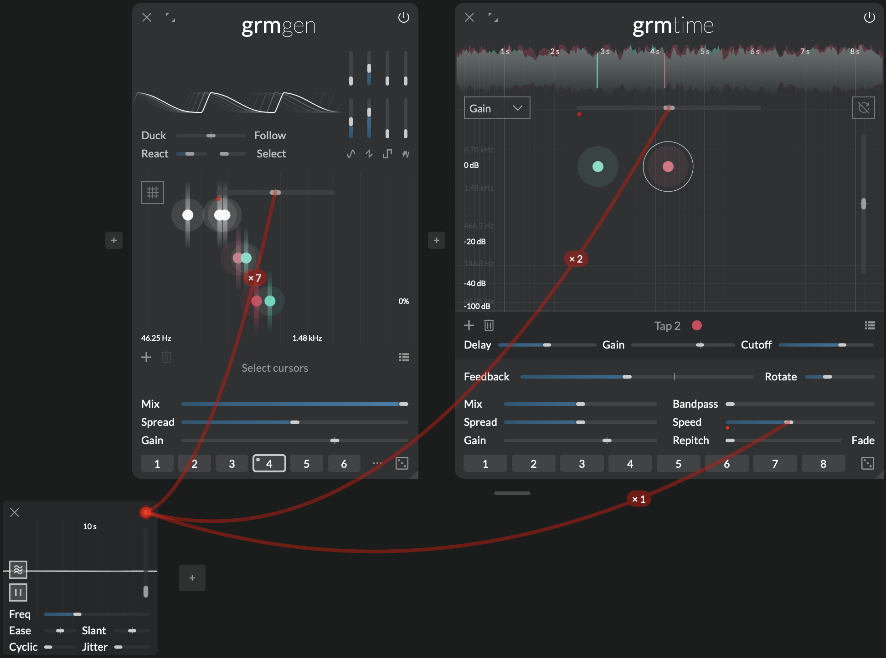
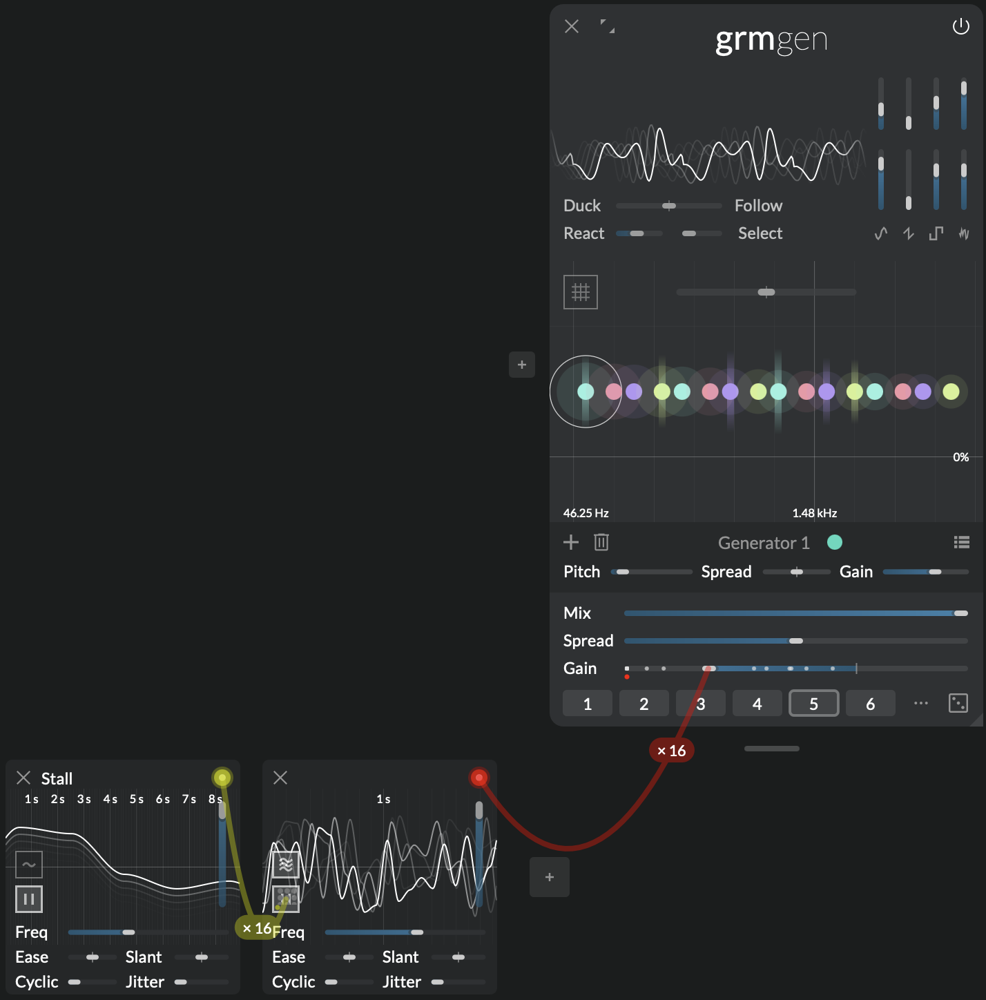

Source of possibility
 Agitation

Agitation is a versatile source of random modulations, able to turn any static sound-processing patch into a dynamic and evolving system of interactions. From subtle variation to utter chaos, from predictible to surprising, it will give life to the most inert material. It is the essential wellspring of all things generative... and more!
Context
The use of randomness as a composition tool is as old as programmatic music, and it is understating it to say that it plays an essential role in the development of electronic music, from John Cage's aleatoric compositions to dedicated early modular synthesizer functions (e.g. "sample and hold").
At its core, an Agitation is an oscillator which chooses a new random target value at each of its steps, and smoothly ramps to it. With the ability to continuously ease this ramp into a steep stairstep (Ease), or control the predictability of its phase (Cyclic, Slant), it offers a wide range of controllable random waveforms. And since modulations are polyadic, each destination an agitation connects to will get a different random signal (Multiplicity).
Note
Agitation signals are bipolar, meaning they move equally above and below the destination parameter's set value. Therefore, to modulate across its full range of without clamping, the destination parameter must be centered and range set to 100%.
Controls
Every parameter has as many independently-modulatable instances as there are outgoing instances of this modulator (ie. the sum of all wires' instance number, see Modulation).
- Amplitude: Amplitude of the agitation signals.
- Frequency: Determines the time between two successive random steps. Goes down to 0 Hz (stalled).
- Ease: Shape of the transition between two successive random steps. At 0%, the shape is sine-like; at 100% it jumps immediately to the next value; at -100% it stays at the current value until the last moment.
- Slant: Ratio of the time spent going up vs. going down. At 0%, it spends the same time raising than falling.
- Cyclic: Periodicity of the successive random steps, from completely random to fully cyclic (alternating up and down).
- Jitter: Amount of randomization of the time between two successive steps.
- Running: Enable to run; when disabled, will finish its current transition and then stall.
- Multiplicity: When enabled, each destination has its own independent agitation engine; when disabled, they all move in unison.
Note
The relative phases of agitations are chosen at random on initialization; they are not saved with the patch.
Tips and tricks
Agitate it

Many parameters in Atelier will benefit from a slow (5-30 seconds-long) and very small (0.1% to 1% amplitude) agitation. A bank of tuned oscillators in Gen will spring to analog life when their frequency Ratio is very slightly agitated. An aggregate of comb filters around 50 Hz will turn from metallic resonance to soft reverberation when Transposition slowly moves. The Feedback of Time, set up with a few taps, will easily be tamed with tiny movements in the delay times (Delay scale).
Statues

Agitate a bunch of parameters in your patch at a relatively high frequency (5 Hz). With another, slower agitation in "unison mode" (Multiplicity off), modulate the Running button of the first. Parameters will regularly stall at random values, before continuing their run. A slightly different effect can be achieved by modulating Frequency with a rectangular wave reaching 0 Hz.